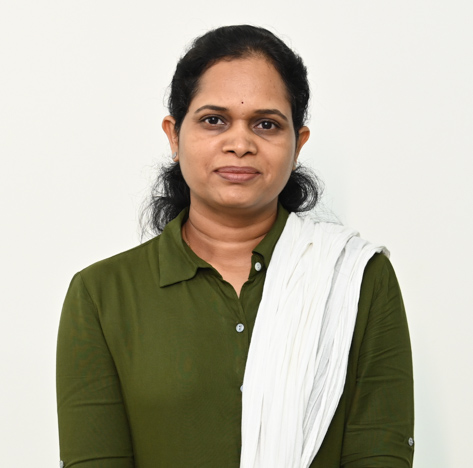

Dr. Nilam Mahesh Pradhan
Assistant Professor

Assistant Professor
Prof. Nilam M. Pradhan is a highly qualified and experienced educator with a passion for research in the field of Electronics and Telecommunication Engineering. She completed her Bachelor's degree in Electronics Engineering from Shivaji University in 2002, followed by a Master's degree in VLSI & Embedded System from Pune University in 2012. Currently pursuing her Ph.D. degree with the Maharashtra Institute of Technology, Pune, her research interests lie in the area of Internet of Things and wireless sensor networks. As a member of IEEE, SAE, and a Lifetime Member of ISTE, Prof. Pradhan has published papers in both national and international journals and conferences. With over 12 years of teaching experience, she has taught a wide range of subjects such as Computer Network, Digital Electronics, Object Oriented Programming, and Analog Communication, among others.
Industrial Internet of Things, Networking